| 팀명 | 세얼간이 |
| 대학명 | 단국대학교 |
| 프로젝트명 | 모찌 |
| 대학명 | 단국대학교 |
| 팀명 | 세얼간이 |
| 팀원(학과) | 송준서(소프트웨어학과), 박세현(소프트웨어학과), 이용찬(소프트웨어학과) |
| 프로젝트명 | 모찌 |
| 한줄소개 | Multimodal AI를 활용한 스크린샷·링크·메모 기록 통합관리 AI 에이전트 서비스 |
인스타그램, 유튜브, 카카오톡, 블로그, 채용공고, 일정, 메모까지 — 필요한 순간을 위해 기록·캡쳐하지만
정보는 여러 앱에 흩어져서 활용되지 못한 채 쌓여갑니다.
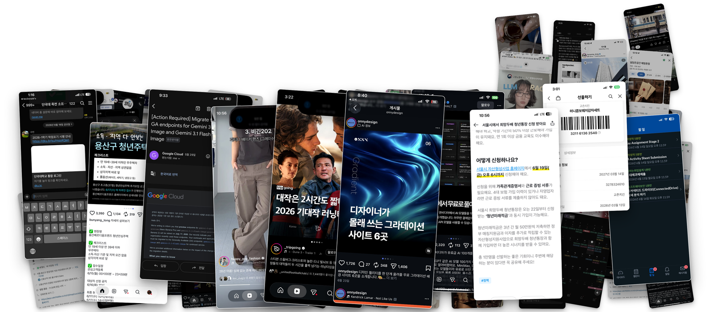
흩어져 있던 기록을 쇼핑·맛집·일정·혜택으로 모아두고,
마감처럼 놓치기 쉬운 순간은 때가 되면 모찌가 먼저 알려줍니다.
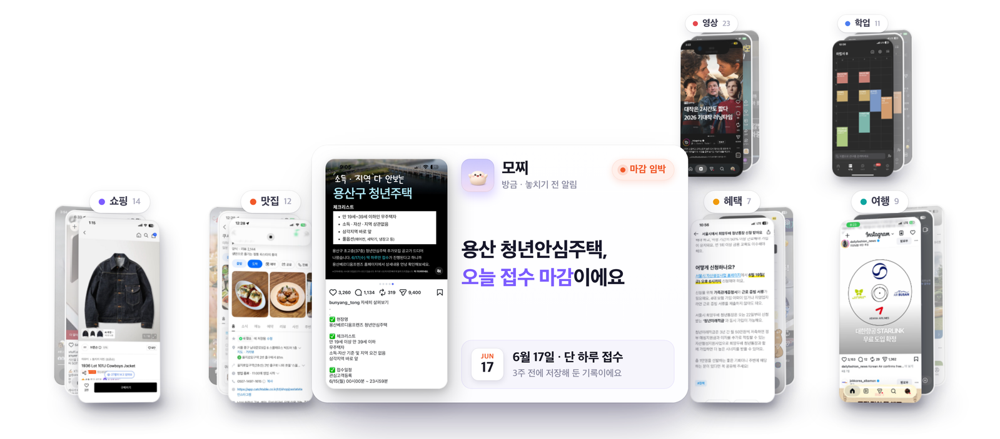
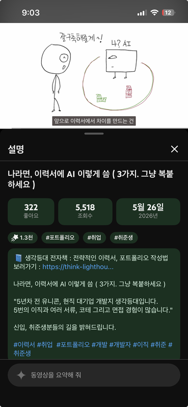
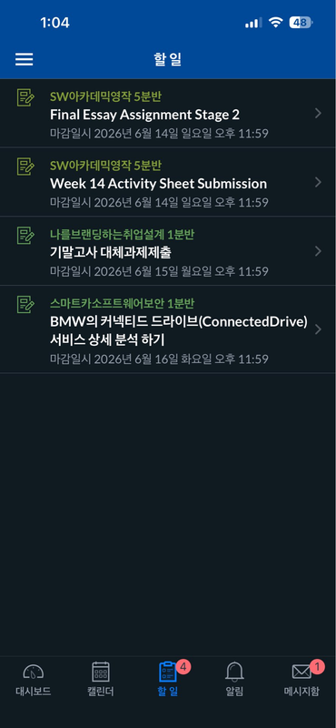
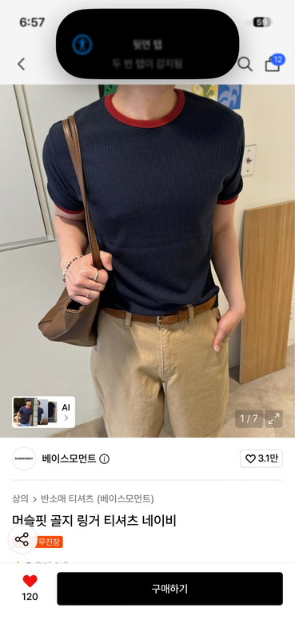
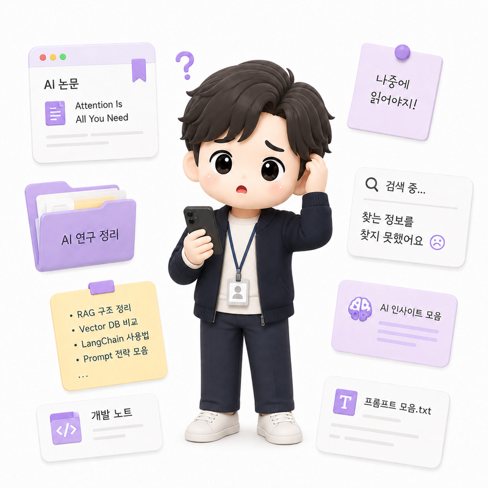
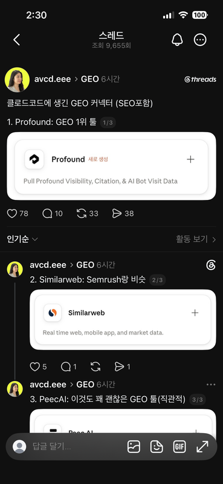
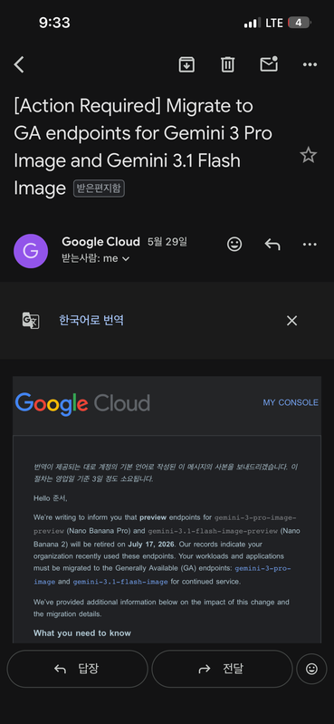
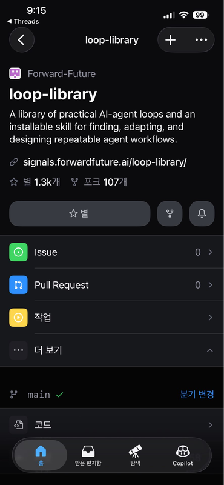
같은 주제의 기록도 앱마다 흩어져, 나중엔 어디에 저장했는지조차 모른다.
시간순으로만 쌓이는데, 정리는 늘 수동이라 결국 방치된다.
저장했다는 사실을 잊으면, 검색창조차 열지 않는다.
"나중에 봐야지" → 영영 안 봄.
폴더도 앨범도 저장한 뒤에는 조용하다. 다시 꺼내 보는 일은 온전히 사용자의 기억력에 달려 있다.
20대 사용자 53명 대상 설문 — 두 문제 모두 소수의 불편이 아니라 다수의 경험이었다
저장하고 끝이 아니라, 다시 필요한 순간에 떠올라야 한다.
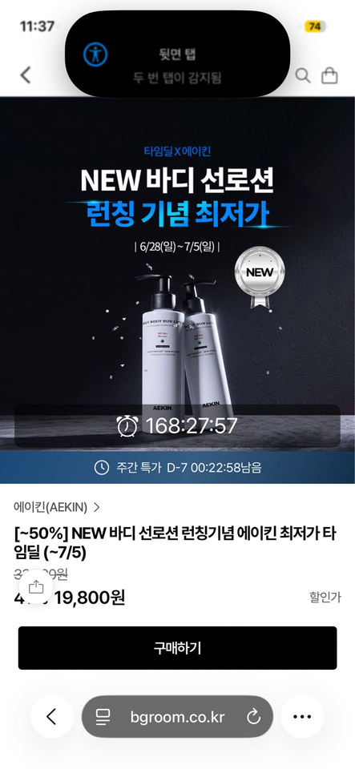
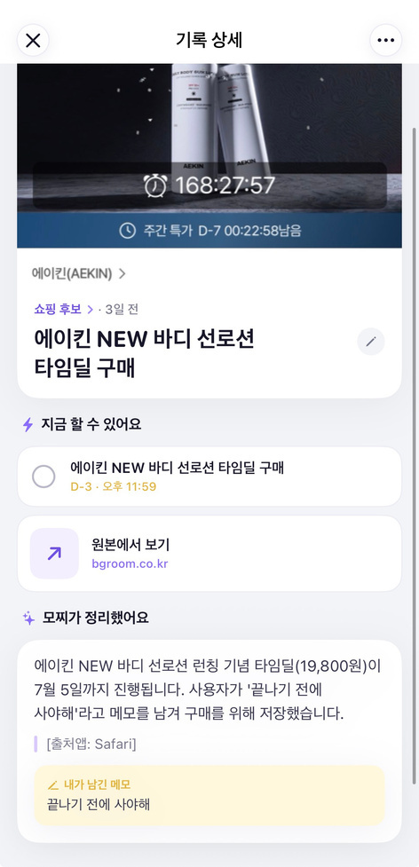
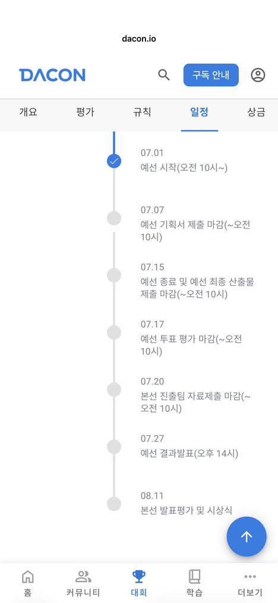
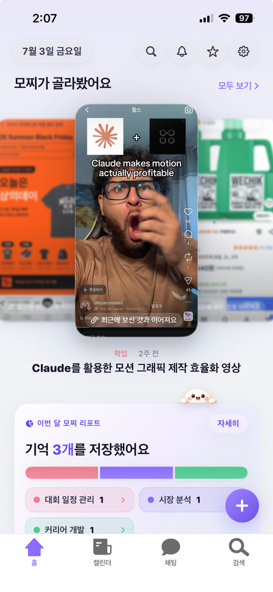
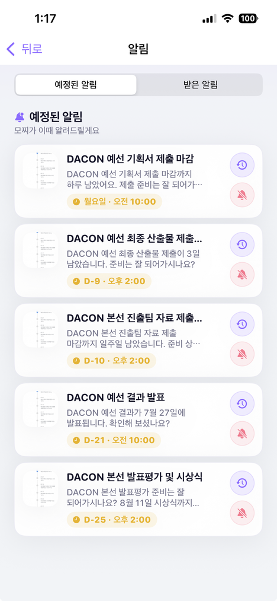
저장하는 습관은 그대로 두고, 저장한 정보가 필요한 순간 다시 쓰이는 경험을 만듭니다.